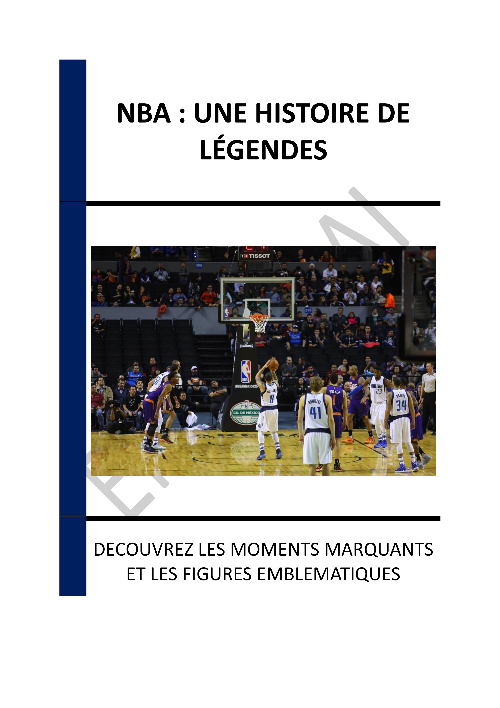

- INTRODUCTION - L'ASCENSION DE LA NBA
- Chapitre 1 - LES DÉBUTS DE LA NBA : DE LA BAA À LA NBA
- Chapitre 2 - L'ÂGE D'OR DES ANNÉES 1980 : MAGIC, BIRD ET LA RIVALITÉ
- Chapitre 3 - L'ASCENSION DE MICHAEL JORDAN ET DE LA CULTURE DES STARS
- Chapitre 4 - LA DREAM TEAM DE 1992 : UN TOURNANT MONDIAL
- Chapitre 5 - L'INTERNATIONALISATION DE LA NBA : JOUEURS ET FANS DU MONDE ENTIER
- Chapitre 6 - LES INNOVATIONS EN MARKETING ET LA CULTURE POPULAIRE
- Chapitre 7 - L'ENGAGEMENT SOCIAL DE LA NBA : AU-DELÀ DU SPORT
- Chapitre 8 - FIGURES LÉGENDAIRES ET MOMENTS MARQUANTS
- CONCLUSION - L'HÉRITAGE ET L'AVENIR DE LA NBA
📄 Consulter les annexes du livre
Mentions légales